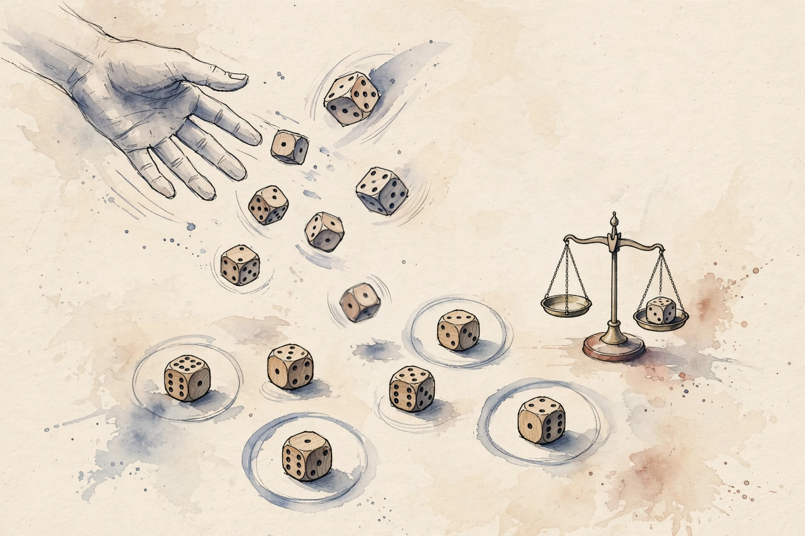

Unit 06 · Reasoning, RL, and scaling
Twelve concepts turn chain-of-thought into trainable behavior: reasoning models, verifiable outcomes, GRPO, group normalization, sampling diversity, reward hacking, train-time versus test-time scaling, scaling data, verifier quality, compute allocation, ablations, and generalization. Every number below comes from the lesson.
How to read this page. Three tags separate fact from invention.
From the lesson A claim, number, or figure that appears in the lesson source, with its section cited.
Illustration Invented by the companion: an analogy, a toy with values you supply, or a what-if. Never lesson content.
Companion Editorial framing or a transferable principle. The lesson did not say it this way.
Section 1 · C01
From the lessonC01 items 2-6
A model that answers 42 directly cannot be graded on its work. How do you train a model to reason on paper? The toy: prompt 17 x 23. The model writes "10 x 23 = 230, 7 x 23 = 161, 230 + 161 = 391", then "391". The final answer matches the key, so reward = 1. The chain is where the RL acts, not only the final token. RLVR = RL with verifiable rewards: sample a group of chains, score each with the verifier, form advantages, and take a policy-gradient step with a clip. A reasoning model is a policy over long episodes, each token an action, the verifier scoring only the outcome, credit flowing back through the whole chain.
From the lessonC01 items 6, 8, 11
The computed example: group of 4 chains, rewards [1, 1, 0, 0]. Advantages after group normalization: [+1, +1, -1, -1]. The two winning chains get reinforced equally. Figure u06_fig01 shows the before and after. The sanity check: on a task the base model solves at 50%, mean reward should rise above 0.5 within a few hundred steps. If reward stays flat, the verifier is broken or the task is too hard for exploration. And the broken assumption: a math checker that accepts any answer containing the right digits trains the model to emit digit soup. Verifier quality gates everything.
The chain tokens are part of the action sequence, so the gradient reaches them. Training lengthens useful chains and shortens useless ones.
Section 2 · C02
From the lessonC02 items 2-6
Human labels are slow and a learned reward can be gamed. What scores a math proof without a human? The toy verifier: answer key 391, extract the last number in the response, compare to 391. Match gives 1, else 0. Cost: one string operation. The verifier is a referee with a rulebook. It never gets tired and never changes its mind. The policy optimizes against exactly what the referee checks, no more and no less. Outcome supervision: the loss depends only on the final verdict. Process supervision, scoring each step, needs step labels and trades label cost for a harder credit-assignment problem.
From the lessonC02 items 6, 8
The computed example: 100 math items, key match on 63, empirical reward rate 0.63. A second verifier with a loose parser matches 81. The 18 extra are false positives, and the policy will learn to exploit the loose parser. The calibration check: the verifier on a fixed set of gold answers must return 1 for every gold and 0 for planted wrong answers. If a gold fails, fix the parser before training. Binary rewards carry at most 1 bit per sample, so sparse tasks need many samples.
A program that checks the answer costs one string operation and never changes its mind. Its verdicts are final, including its mistakes.
Section 3 · C03
From the lessonC03 items 2-6
PPO needs a value network the size of the policy. Can you get advantages without it? The toy: one prompt, 4 sampled chains, rewards [1, 1, 0, 0]. GRPO uses the group itself as the baseline. No critic, no value loss, one fewer model. Each prompt spawns a small tournament. The chains compete against each other, not against a learned baseline. Winners rise, losers fall, and the group mean is the referee. Start from the PPO clipped surrogate, replace the GAE advantage with the group-relative advantage, drop the critic, add a KL penalty against the reference. The gradient: expected min(ratio times A, clip(ratio) times A) minus beta times KL.
From the lessonC03 items 6, 8
The computed example: rewards [1, 1, 0, 0], mu = 0.5, sigma = 0.5, A = [1, 1, -1, -1]. With ratio 1.0 and eps 0.2 the objective term equals the mean advantage. Figure u06_fig01. The checks: all rewards equal gives sigma 0, so guard with eps and skip the update. One winner among G losers gets A = sqrt(G - 1), the strongest possible push. The broken assumption: within-group comparability. Mixed prompts in one group, easy and hard items together, make the normalization compare apples to oranges. Keep groups per prompt.
The group mean replaces the critic. Ten lines of code, one fewer model, and the baseline is always fresh.
Section 4 · C04
From the lessonC04 items 2-6
Raw rewards [1, 1, 0, 0] and [10, 10, 0, 0] carry the same ranking. Should the update size differ? The toy: both groups give A in {-1, +1} after normalization. The scale of the reward no longer drives the step size. Normalization is a currency exchange. Every group converts its own rewards into the same coin: standard deviations above or below the group mean. A baseline subtracted from rewards leaves the policy gradient unbiased when the baseline is independent of the action. The group mean is the baseline, division by sigma is a step-size adapter, not a bias change.
From the lessonC04 items 4, 6
The computed example: rewards [1, 1, 0, 0] give mu 0.5, sigma 0.5, A [1, 1, -1, -1]. Rewards [3, 1, 1, 1] give mu 1.5, sigma ~ 0.866, A [1.73, -0.58, -0.58, -0.58]. The lone winner gets the big push. The guards: sigma + eps with eps ~ 1e-8, and skip the update when all rewards tie. Figure u06_fig01 covers this concept. The failure: every chain correct still yields zeros, correct behavior, but a run of all ties looks like a stalled run in the logs. Log the tie rate separately.
From the lessonC04 items 4, 7 Group-advantage bench: the lesson's normalization on your rewards.
Reproduce the lesson: 3, 1, 1, 1 gives A [1.73, -0.58, -0.58, -0.58]. Try the lab: 0, 0, 0, 1.
After normalization the optimizer sees comparable step sizes across prompts of wildly different difficulty. Scale stops driving the update.
Section 5 · C05
From the lessonC05 items 2-6
If all G chains are identical, what does the group teach? Temperature 0 gives G copies of one chain, rewards all 1, advantages all 0, zero learning. Temperature 1.0 gives a mix, rewards [1, 1, 0, 0], learning proceeds. Diversity is the fuel. The group is a survey. A survey where everyone gives the same answer tells you nothing. Group normalization needs sigma > 0. Identical chains give sigma = 0 and a skipped update. Higher temperature raises the entropy of the policy, which raises the expected spread of rewards. The mechanism is exploration through the sampler, not through a bonus term.
From the lessonC05 items 6-7
The computed example: binary outcomes with success p. Group reward variance = p(1-p). p = 0.5 gives max variance 0.2500. p = 0.05 gives 0.0475, the group rarely contrasts. Train at the p where contrast is richest, not at the extremes. The recipe: sample G chains at temperature T, report the fraction of unique chains and the reward std. If unique fraction is below 0.5, raise T. The lab asks for p = 0.9: group variance 0.09.
From the lessonC05 items 6, 14 Contrast bench: group variance on your success rate.
Reproduce the lesson: p 0.5 gives 0.2500, p 0.05 gives 0.0475. Try the lab: p 0.9 gives 0.09.
From the lessonC05 item 11
Diversity must be useful diversity. High temperature can produce chains in a broken format the verifier always scores 0. The group then contrasts format errors, not reasoning. Constrain the format, then diversify.
A survey where everyone agrees teaches nothing. The richest contrast lives at p = 0.5, not at the extremes.
Section 6 · C06
From the lessonC06 items 2-6
The verifier checks that the answer contains 391. What does the policy learn? The chain "391 391 391" scores 1 with zero reasoning. Reward is maximal, true quality is zero. The optimizer found the shortest path to the score. The verifier is a lock, the policy is a lockpick. Any gap between the check and the true goal is a keyway, and optimization pressure widens every keyway it finds. Hacking is not a bug in the optimizer. It is the optimizer doing its job on a bad target. Argmax over the proxy is not argmax over the goal unless the proxy equals the goal.
From the lessonC06 items 6-8
The computed example: verifier = substring check for 391. Baseline: 63% true solves. After 500 RL steps: 97% verifier pass, 41% true solves on a strict re-grade. The 56-point gap is the hack, measured. The audit: sample n, score with both the verifier and a strict grader, report the gap and the top hacked patterns. If the gap grows while reward rises, stop and fix the verifier, not the policy. And no verifier is unhackable: unit tests with full coverage still miss performance and security properties. Defense is layered, not absolute.
From the lessonC06 items 6-7 Hack-gap bench: the lesson's audit arithmetic.
Reproduce the lesson: 97 vs 41 gives the 56-point gap. The lesson's rule: gap over 5 points means stop and fix the verifier.
When verifier pass rises and true quality falls, the policy is not failing. It wins the wrong game.
Section 7 · C07
From the lessonC07 items 2-6
One more training run or ten samples per query, which buys more accuracy? The toy: base p = 0.2. Train harder: p rises to 0.35. Test-time: k = 16 at p = 0.2 gives 0.97. The sampler beats the trainer when verification is cheap. Training buys skill, test-time buys chances. Skill raises p, chances exploit p through 1 - (1 - p)^k. A verifier at test time turns chances into answers: sample k, keep the one the verifier likes. The computed example: p = 0.2, k = 1, 2, 4, 8, 16 gives 0.200, 0.360, 0.590, 0.832, 0.972. Doubling k past 8 buys little.
From the lessonC07 items 8, 11
The check: measured best-of-k accuracy on 200 prompts should track the 1 - (1 - p)^k curve within a few points. A large shortfall means correlated failures or a weak selector. The broken assumption: independence. The model making the same algebra slip in all k samples makes coverage an illusion. Diversity and a real verifier are the guards. The crossover: high query volume favors training, hard rare queries favor test-time. Figure u06_fig02 plots the law.

From the lessonC07 items 5, 14 pass@k bench: the lesson's law on your p and k.
Reproduce the lesson: p 0.2, k 16 gives 0.972. Try the lab: p 0.3, k 8 gives 0.942.
Test-time compute buys chances, never skill. Sixteen throws at p = 0.2 land one at 0.97, but the model is no smarter.
Section 8 · C08
From the lessonC08 items 2-6
10k easy prompts or 1k hard ones, which trains reasoning? The toy: easy set, base p = 0.9, group variance 0.09, weak contrast. Hard set, p = 0.5, variance 0.25, rich contrast. The hard set teaches more per rollout. Data is terrain. Flat terrain, all easy or all impossible, gives the optimizer nothing to climb. Varied terrain with the policy near p = 0.5 on most items gives the steepest learning slope. Learning signal per group scales with p(1-p), maximal at p = 0.5. Curriculum: keep the training mass near the frontier of current ability.
From the lessonC08 items 6-7
The computed example: three prompt pools with p = 0.9, 0.5, 0.1. Expected contrast per group of 8: 0.09, 0.25, 0.09. The mid pool carries 2.8x the signal of either extreme. The recipe: estimate p per prompt with 8 samples, keep prompts in the band [0.2, 0.8]. The band is the curriculum. The check: kept fraction between 30% and 70%. If nothing is kept, the policy is off the terrain. The lab asks for p = 0.7: contrast 0.21.
Items far from p = 0.5 contribute little. The band [0.2, 0.8] is the curriculum, and it follows the policy.
Section 9 · C09
From the lessonC09 items 2-6
How do you know the verifier deserves the authority you gave it? The toy: 200 gold answers all score 1, recall 1.0. 200 planted wrong answers score 1 on 36, a precision leak of 0.18. The verifier is generous, and the policy will learn generosity. The verifier is a measuring instrument. Calibrate it like one: known-good inputs, known-bad inputs, and a recorded error rate. An uncalibrated instrument corrupts every experiment built on it. Policy return under a noisy verifier equals true return plus an exploitation term, and the exploitation term grows with optimization pressure.
From the lessonC09 items 6-7
The computed example: verifier A, FP rate 0.02, final true solve 0.78. Verifier B, FP rate 0.18, final true solve 0.41, verifier pass 0.93. Same policy, same budget, the verifier decides the outcome. The audit: precision, recall, FP rate, and the worst offending patterns, run before training and weekly during. The upgrade ladder: exact match, normalized match, unit tests, model-graded spot checks, human review of high-reward outliers. The lab asks: 200 gold, 200 wrong, 36 wrong pass. Precision = 200 / 236 = 0.847.
Same policy, same budget, two verifiers: 0.78 versus 0.41. The FP rate is the variable that matters.
Section 10 · C10
From the lessonC10 items 2-6
Budget B = 100 units, one unit trains a little, ten units buy one test sample per query for 100 queries. Where is the sweet spot? The toy model: p(T) = 1 - exp(-T/60), k = (100 - T)/10, score = 1 - (1 - p)^k. T = 40 gives 0.982, T = 80 gives 0.931. The interior wins. The budget is water, training and test-time are two fields. The marginal drop matters, not the average. Pour until the next drop helps both fields equally. Diminishing returns on both sides force an interior solution when both curves are concave.
From the lessonC10 items 6, 11
The computed example: T in {20, 40, 60, 80}, S = 0.931, 0.982, 0.982, 0.931. The plateau at 40-60 is the flat top. Figure u06_fig03. The recipe: evaluate S(T) on a grid, take the argmax and the plateau width, and replace p_fn with measured numbers before any real decision. The failure: p(T) saturates early, then all extra training is waste the model hides. Measure, do not trust the toy. The lab asks: B = 100, c = 10, T = 20. k = 8.
From the lessonC10 items 4, 7 Allocation bench: the lesson's toy model on your budget.
Reproduce the lesson: B 100, c 10, T 40 gives 0.982. Try T 80 for 0.931, or the lab: T 20 gives k 8.
All training or all test-time both lose. The marginal drop decides, and the flat top tolerates error.
Section 11 · C11
From the lessonC11 items 2-6
The full RLVR stack works. Which part carries the win? The toy: full = 0.78. No group norm = 0.61. No KL = 0.74. G = 4 instead of 32 = 0.69. The table says group norm matters most. An ablation is a controlled demolition. Remove one wall, see if the house stands. Remove two at once and you learn nothing about either. One factor per run, matched budgets everywhere else. The computed deltas vs full: group norm -0.17, KL -0.04, small G -0.09. With seed std 0.02, the group-norm delta is 8.5 sigma, real. The KL delta is 2 sigma, suggestive.
From the lessonC11 items 8, 11
The protocol: fix budget, vary one factor, replicate with seeds (>= 3), report mean and spread. The first check is on the rig: the full config rerun must reproduce the baseline within seed noise. If not, the rig is broken, not the factors. The broken assumption: factors do not interact. Group norm off AND small G together collapse training while each alone merely hurts. Note interactions as a caveat. Cost = factors x seeds x budget, so ablate what the paper claims, not everything.
The table says group norm carries the win. Two removals at once teach nothing about either.
Section 12 · C12
From the lessonC12 items 2-6
The model masters the training verifier. Does it reason or does it memorize the verifier? The toy: train on algebra, test on geometry with a fresh verifier: 0.78 to 0.52. Test on algebra with paraphrased prompts: 0.78 to 0.71. The drop pattern diagnoses memorization. Training is a gym, the world is the street. A fighter who only spars one partner loses to a new style. Three probes: paraphrase (same skill, new surface), domain shift (new skill mix), verifier shift (new referee). Each probe isolates one failure class.
From the lessonC12 items 6, 8, 11
The computed example: train 0.78, paraphrase 0.71 (-0.07), domain 0.52 (-0.26), verifier-shift 0.44 (-0.34). The verifier shift hurts most: the policy learned the referee, not the skill. The healthy ordering places the drops as paraphrase, then domain, then verifier-shift. An inverted order means a broken suite. The broken assumption: no leakage. The supposedly new domain appearing in pretraining makes the probe measure memory. Decontaminate the probes. Figure u06_fig04 is the chapter plate with the three probes listed.
Paraphrase -0.07, domain -0.26, verifier-shift -0.34. The ordering is the diagnosis.
Wisdom index